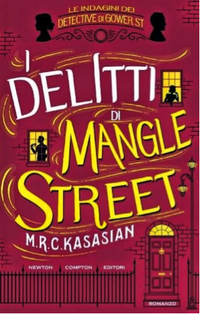

Autore: M.R.C. Kasasian
Editore: Newton Compton
Pagine: 512
Genere: Thriller
Anno Pubblicazione: 2016
Sidney Grice, il più famoso detective della città di Londra, ha accettato un caso nello Yorkshire e ha lasciato la sua pupilla March Middleton a occuparsi della casa in Gower Street. Ma la tranquillità della vita domestica non esercita un particolare fascino su March, che aspira a diventare la più famosa (nonché unica) detective donna di Londra.
Così, quando riceve una strana lettera da un facoltoso parente che non sapeva di avere, March, incuriosita, decide di accettare l’invito a trascorrere la notte nella splendida villa Saturn per conoscere il misterioso zio Tolly. Non può certo immaginare che la mattina dopo si ritroverà sulla scena di un crimine. E questa volta la priorità di March non è indagare sul caso, ma difendersi da un’accusa di omicidio…
La serie dedicata alle indagini dei detective di Gower Street giunge al suo terzo capitolo. “Il mistero di villa Saturn” è il romanzo delle conferme, il titolo che toglie ogni dubbio rimasto con le investigazioni precedenti.
I primi due libri, infatti, pur essendo ottime letture, non lasciano un segno indelebile: Sidney Grice rimaneva troppo legato alla figura ‘ingombrante’ del suo più illustre predecessore, Sherlock Holmes. Con questa ultima avventura, tuttavia, la creatura nata dalla penna di M. R. C. Kasasian sembra finalmente trovare il giusto ruolo all’interno del confuso ed affollato universo della letteratura thriller grazie ad una storia più matura, studiata e raffinata capace di coinvolgere e sconvolgere il lettore lasciandolo privo di punti di riferimento sino all’ultima pagina.
Spesso, per dare una svolta ed uno scossone ad una serie avviata, è necessario indagare e fare luce tra le pieghe più oscure del passato dei protagonisti. Questo è accaduto recentemente con “La via del male” di Robert Galbraith. Kasasian segue proprio questa strada mettendo allo scoperto le paure più nascoste e i maggiori rimorsi dei personaggi interessati dalle vicende narrate. La figura più coinvolta è senza dubbio quella di March Middleton, braccio destro dell’investigatore Grice nonché narratrice di tutte le loro avventure.
La vita della giovane donna cambia radicalmente nel momento in cui, dopo un insolito incontro con un parente, inizia ad avere delle inquietanti visioni. La situazione precipita rapidamente quando March viene accusata di omicidio. Si assiste, quindi, ad uno stravolgimento dei ruoli: da detective a sospettata, da paladino della giustizia a criminale senza scrupoli. Gli indizi, dopotutto, parlano chiaro e indicano come colpevole la ragazza. Difficile sostenere il contrario.
Il lettore è spaesato e confuso dagli avvenimenti che mettono in discussione il legame instaurato con i personaggi principali, un rapporto che, paradossalmente, si rafforza grazie a difficoltà e paure condivise con la signorina Middleton, indifesa e in balia degli eventi.
La chiave di lettura necessaria per comprendere la verità deve essere ricostruita passo dopo passo con piccoli dettagli disseminati accuratamente dall’autore in ogni capitolo. Solo con il lodevole finale, tuttavia, è possibile osservare il quadro completo, l’ennesima dimostrazione dell’astuzia e della prontezza del brillante duo investigativo.
Il ritmo altalenante ed alcuni passaggi frettolosi potrebbero penalizzare la lettura che, però, viene valorizzata anche da un pungente humour inglese grazie alla presenza, mai indifferente, di Sidney Grice, scorbutica ma geniale personalità che viene ulteriormente approfondita in questo terzo capitolo.

L'AUTORE - Cresciuto nel Lancashire, prima di diventare uno scrittore, ha fatto molti lavori diversi. Vive con la moglie nel Suffolk durante l’estate e a Malta d’inverno.Il mistero di villa Saturn è il terzo libro della serie investigativa dedicata al detective Sidney Grice e alla sua assistente March Middleton, di cui la Newton Compton ha pubblicato anche i primi due episodi: I delitti di Mangle Street e La maledizione di casa Foskett.
Dello stesso autore su THRILLERNORD:
IL LIBRO - Sidney Grice, il detective privato più famoso della città, è costretto a fare i conti con un giro di clienti sempre più esiguo: l’ultima persona che gli si è rivolta in cerca di aiuto è finita sulla forca e l’opinione pubblica non l’ha presa affatto bene. E neppure i suoi affari...
 IL LIBRO - Londra, 1882. Il celebre detective Sidney Grice è stato nominato tutore legale di una ragazza rimasta orfana da poco, March Middleton. Eccentrico, esigente e insopportabilmente pignolo, Grice attende l’arrivo a Londra della sua protetta...
Se siete lettori appassionati visitate questo blog
storiesbooksandmovies